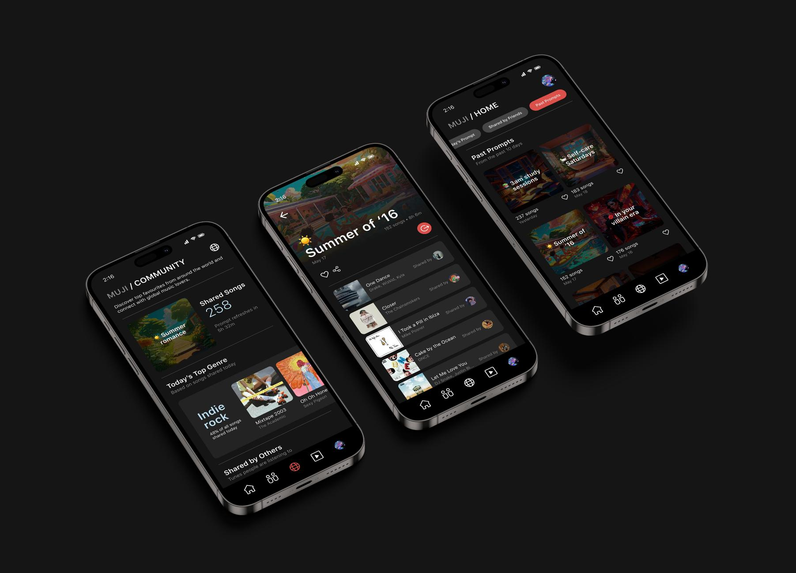
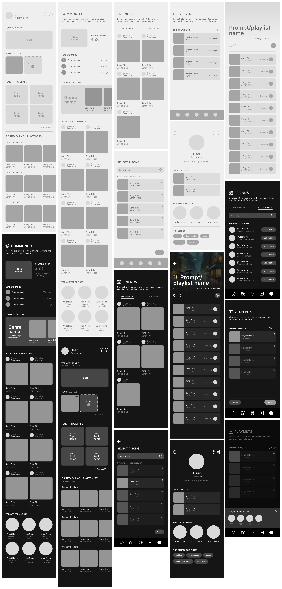

Muji App.
Muji is a concepted music-sharing platform that encourages users to collaborate on playlists and share their love for music. Playlists are based on prompts or themes provided each day, which can in turn be exported to preferred music-streaming/listening services.
As part of my journey to explore UX design in mobile apps, I was inspired to create a concept that would combine music with the simplicity of BeReal. The French photo-sharing app gained traction for the authenticity in its goal: to remove the "fakeness" of social media and share in-the-moment snapshots of daily life. I was passionate about seeing how this approach could extend to music, and how users could be encouraged to contribute to something that didn't rely on algorithms or curated profiles.
THE BRIEF: How can we encourage people to share music in a collaborative way?
I began by conducting market research on existing music-sharing apps and music-streaming platforms to identify how users interact with each other. Sharing music in the style of BeReal (one song per day) was much less popular than sending a link or sharing to a social media app; however, there were two apps that stood out:
ENSEMBLE
- Created by MySound Inc. / 2022 / iOS only
- Users share one song per day based on a theme
- A "fire" reaction can be given to show approval of song choices made by friends
CADENZA
- Created by Mike Tibollo / 2023 / iOS only
- Designed to help create playlists without the use of an algorithm for suggestions
- Users can collaborate on playlists with others
Both apps had very few reviews and downloads compared to streaming giants, which can be attributed to the following factors: lack of funding or resources for development; being overshadowed by more popular music apps; or the app's theme is not as popular with users than expected.
Major music-streaming services provide a feature for users to share songs directly to other social media platforms. This is done via a card/widget that contains the song title, artist and cover art; the UI style varies from app to app.


Given BeReal was a highly influential part of developing Muji’s concept, I wanted to understand what drew users to it as opposed to other social media apps. I started by analyzing its functionality as a photo-sharing platform; based on reviews from users, I identified four key issues:
ISSUE #01
After an extended period of time, many users found BeReal to be too repetitive and boring. They felt the moments being shared from their lives were "too mundane" compared to others.
ISSUE #02
The removal of the "Discovery" feature isolated users from the rest of the world. They no longer felt connected to others when they couldn't see what was being shared.
ISSUE #03
The removal of the "Memories" feature prevented users from accessing past moments shared with friends/family. Unless the photos were saved to the device's local storage, they couldn't be recovered.
ISSUE #04
The app itself is not optimized for mobile devices and users experienced several technical issues. Frequent problems with notifications, camera access and in-app functions were reported.
Considering popular music-streaming services hold positions of monopoly over the industry, Muji needed to maintain a unique approach to sharing music that would allow it to stand out amongst its market competitors. Simultaneously, it faced the challenge of emphasizing user friendliness and learning from BeReal's biggest mistake: removing the ability to look back to the past.
Using the findings from my market research and my analysis of feedback from users of BeReal, I outlined a set of goals for Muji:
- [ 1 ] Allow users to share music with others.
- [ 2 ] Allow users to create playlists based on prompts.
- [ 3 ] Provide a way to access past playlists.
- [ 4 ] Encourage positive interactions between users.
- [ 5 ] Help artists gain more exposure with their music.
Muji is designed to bring exposure to new and upcoming artists; a true wingman in the world of music. App stores on both Android and iOS are oversaturated with music player apps, which renders Muji's goal obsolete if it were marketed as such. Instead, Muji provides the ability for users to hear snippets of songs; full tracks can be played via the preferred music-streaming service of choice. This way, artists are supported by streams of their music in places where their songs have been uploaded and are licensed to be played. Muji is simply the monkey in the middle.

Three levels of fidelity were used to generate the wireframes and mockup screens: base wireframe (white/gray, placeholders); structured wireframe (dark gray/black, more text elements); and integrated mockup (with photos, buttons, links). I wanted to incorporate the simplicity of BeReal's UI, while simultaneously drawing from the structure of Spotify and Apple Music; VSCO's UI was also a point of inspiration its minimalistic design.
Simplifications were made on the Home screen; instead of relying on a scroll-first page, I divided the content into three individual sections that could be accessed via buttons at the top. Songs shared by friends were moved to the Home screen, while the Friends screen focused primarily on friends lists. The "leaderboards" element on the Community screen was removed in the final design; while I considered it to be a fun way of seeing how active users are from different parts of the world, I opted for its removal as it would require access to location data and I believed a music-sharing app wouldn't require this permission.

Designed and animated in Figma.
Muji's visual identity and UI incorporates dark themes and an accent colour of peach-red (#DB504A). The logo combines two variations of eighth notes: a regular note and a beamed note; the bridge that forms the beamed note also forms the letter 'M', standing for Muji.


(Crafted with love & patience)